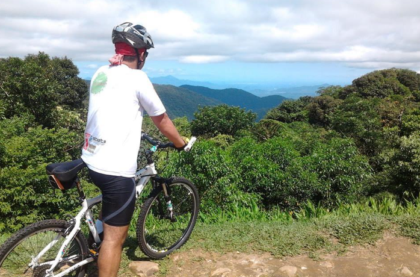
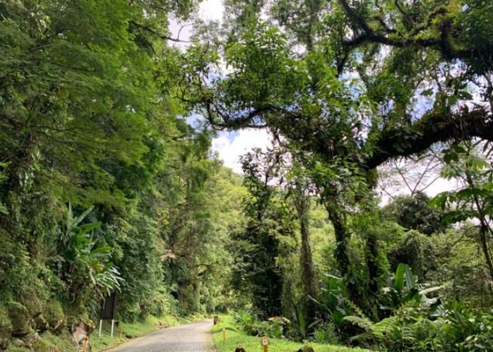

Pedal da Graciosa
A Estrada da Graciosa, no Paraná, é um dos destinos mais icônicos para o cicloturismo no Brasil. Com paisagens deslumbrantes da Serra do Mar e rica história, ela oferece experiências únicas para ciclistas de todos os níveis.
Trata-se de um cenário ideal para viagens sossegadas, onde a história e a beleza da Mata Atlântica se misturam. O trajeto conta com curvas sinuosas e trechos pavimentados com paralelepípedos centenários.
Como atrações, a rodovia mantém recantos equipados com mirantes para admirar a vista da serra e da baía de Paranaguá (como o Mirante Engenheiro Lacerda), além de quiosques de vendas de produtos típicos da região (balas de banana, cachaça artesanal e pastel).

